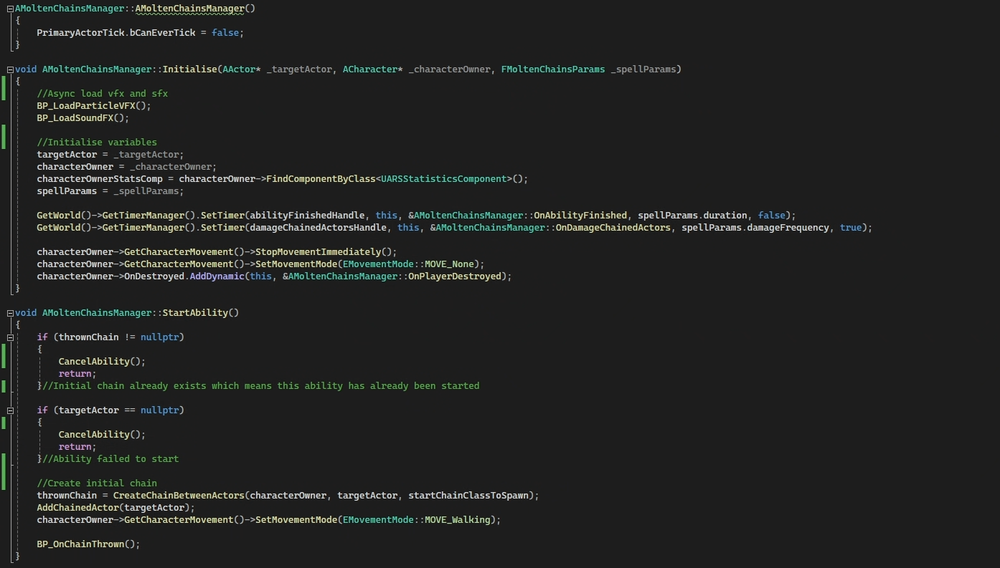
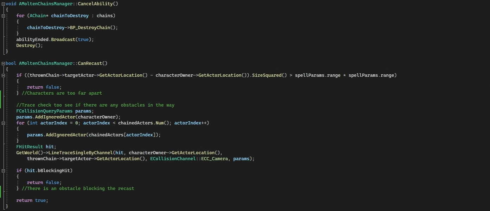
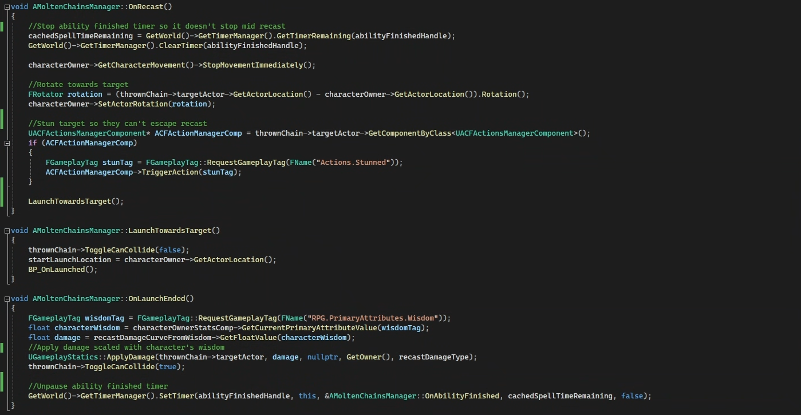
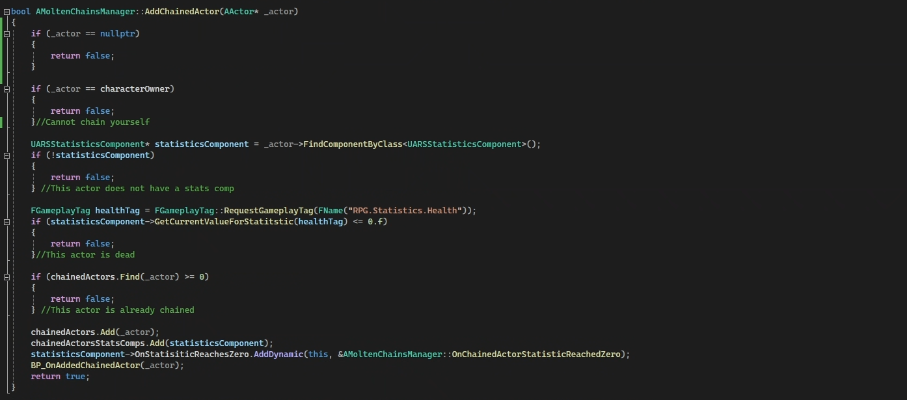
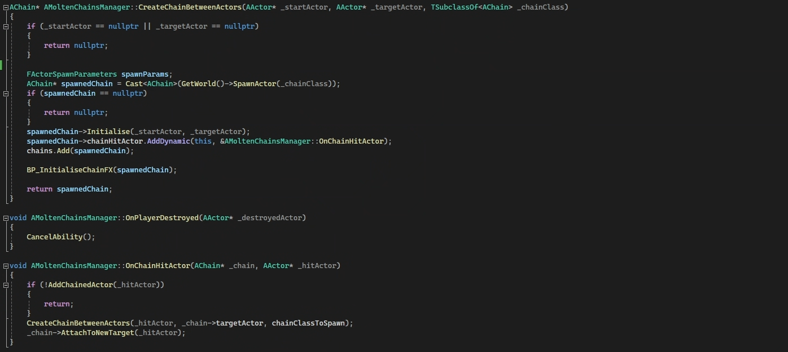
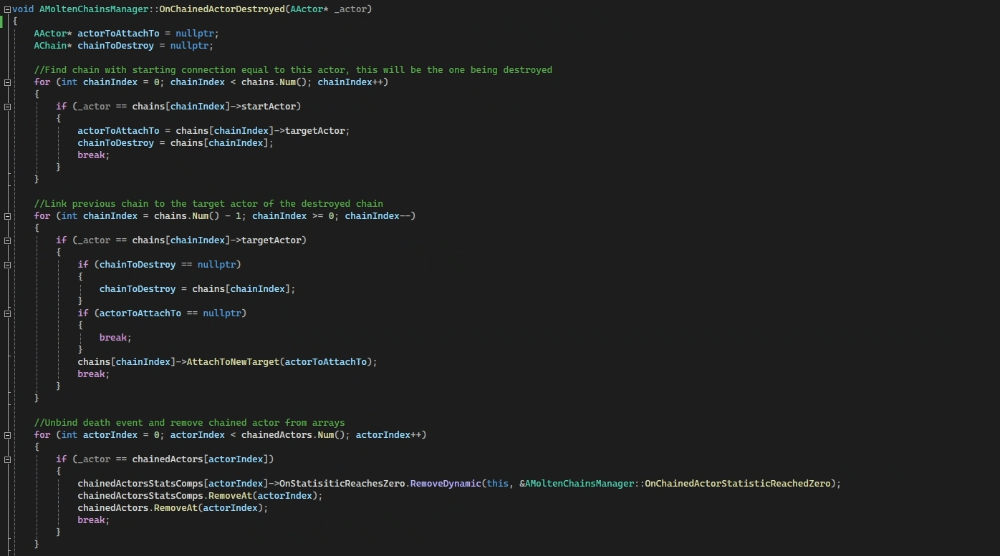
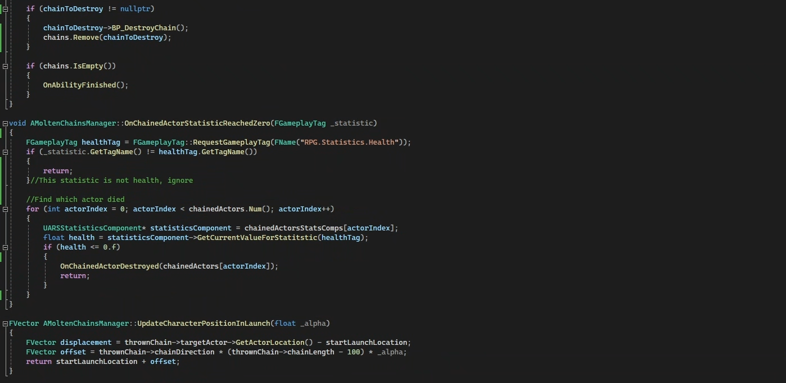
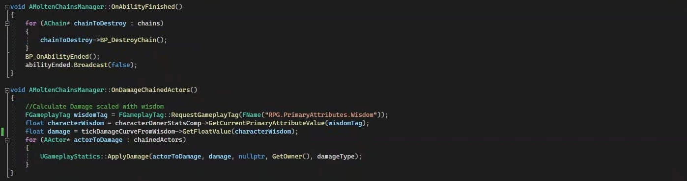

INFINITY27 Skills Bootcamp September 2024
Unreal Engine 5, C++ & Blueprints
Overview
Samsara is a game being developed by INFINITY27 which I got the chance to work on as part of the INFINITY27 September 2024 Skills Bootcamp.
During this project, I was in the development strand, and had to design and implement a spell for the game. I began by thoroughly reviewing the project’s design document and learning about the game’s lore and systems. My goal was to create a spell that would not only add value to the gameplay but also teach players something new, engage them differently, and align with the core pillars of the game. It had to be distinct from the existing spells while fitting within the behaviours, aesthetics, and design of the characters.
The spell I came up with is for the character Naraka, a Demon/Hell Guardian who symbolizes hell, and whose personality is vindictive and devious. Staying true to Naraka’s design, I envisioned a spell that requires the player to cunningly outmanoeuvre enemies to chain them together. Upon recasting the spell, Naraka yanks himself towards the enemy first in the chain.
To bring this idea to life, I followed an agile methodology, planning sprints and iterating on the prototype using:
1. Levels of Fidelity (LoFs) checks to make sure the core features of the spell are present and possible to implement before adding visuals and developing the prototype further - making sure time isn't wasted developing something which will get scrapped.
2. Feedback from designers to make sure my spell stays in-line with the vision, adds to the gameplay and is balanced.
3. Performance tests to make sure the spell runs at a shippable framerate and is optimised.
To make sure that current and future developers understand the design intent and how my code works, and can also build off of it, I've created code flow charts, UML diagrams, included references and inspirations for the idea, described the spell's functionality, usage and stats in a design doc, and implemented readable, scalable and maintainable code.
I initially developed the prototype in Blueprints. Once all the features were solidified and the spell passed the necessary tests, I began the transition to C++. I'm incredibly proud of my progress so far and am looking forward to finalizing the visuals and sound effects!
My favourite parts of this journey were learning the workflow of implementing a feature like this in an industry-standard manner, getting to know the team, making friends, having loads of fun playtesting the game and other people's work, learning perforce version control with Unreal Engine, and gaining experience in joining in on an established game nearing completion, and building on top of it.
Code Sample:
       